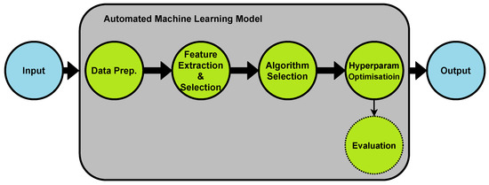
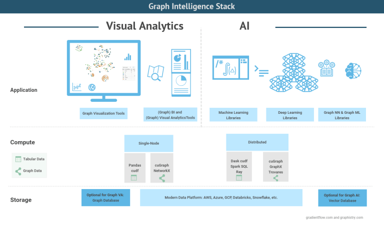

Data science is reshaping how organizations derive insights from complex datasets, driving innovation across sectors. In today’s data-driven world, data science has become a cornerstone of innovation. It enables businesses to uncover hidden insights, improve operations, and gain competitive advantage.
The growing reliance on data has elevated the roles of data analysts, scientists, and engineers. For instance, in retail, a data analyst might study customer purchase patterns to optimize inventory and personalize campaigns. In healthcare, a data scientist could build predictive models for personalized treatments. In finance, a data engineer may design real-time pipelines for fraud detection. These examples show how data roles drive progress across industries.
As digital transformation accelerates, the demand for skilled data professionals will continue to rise. Data is no longer optional, it’s essential. Analysts, scientists, and engineers form the backbone of innovation, not only solving today’s problems but paving the way for tomorrow’s breakthroughs.
AutoML in Healthcare: AutoML streamlines machine learning for non-experts by automating feature selection, hyperparameter tuning, and deployment. In healthcare, AutoML is helping analyze electronic health
records and genomic data to predict disease risks and personalize treatments. This reduces diagnostic delays and improves outcomes in conditions like cancer and diabetes.

Edge AI in Manufacturing: Edge AI enables real-time decision-making directly on IoT devices, reducing latency and reliance on the cloud. In smart factories, Edge AI detects anomalies such as overheating
or vibrations, shifting maintenance from reactive to proactive, and increasing operational efficiency.
Synthetic Data in Finance: Synthetic datasets mimic real data while preserving privacy. Financial institutions use synthetic data to train fraud detection models without exposing sensitive transaction
details. This improves accuracy while maintaining regulatory compliance (e.g., GDPR).

Graph Analytics in Retail: Graph analytics uncovers relationships between customers, products, and transactions that traditional metrics miss. Retailers use it to track customer behavior across online,
in-store, and social channels, enabling hyper-personalized recommendations and boosting loyalty.

Explainable AI in Education: XAI provides interpretable insights into AI decisions, making models more transparent. Schools use XAI to identify learning gaps and suggest personalized lesson plans,
improving student outcomes and fairness in education tools.
Beyond technical trends, global forces are shaping AI. The U.S. and China lead in AI investment, R&D, and education. Meanwhile, debates over open-source vs. proprietary AI (e.g., Meta’s LLama vs. OpenAI’s GPT) highlight trade-offs between innovation and control.
Energy consumption is a major concern. Large AI models can consume as much electricity as 100 U.S. homes annually. This is driving research into greener architectures like neuromorphic chips and spiking neural networks.
From faster diagnostics to real-time manufacturing insights and fraud-proof banking, the five technologies discussed are transforming industries. As AI grows more influential, so does the demand for transparency and regulation. The coming decade will see data science become as commonplace as spreadsheets. Organizations that embrace Python, AutoML, and explainability tools like SHAP will lead innovation. Despite challenges like energy use and talent shortages, the future of AI will be shaped by today’s adopters.
“It's not just about accuracy, it's about whether people can understand and act on what the AI says. That's where explainability becomes mission critical.” — Cassie Kozyrkov, Chief Decision Scientist at Google
“Many AI systems perform well in a laboratory but fail in the real world due to biased or incomplete training. Responsible AI means bridging that gap, not just optimizing metrics.” — Andrew Ng
Whether you're a business leader, policymaker, or aspiring data scientist, these trends point to a more integrated and accountable data future.
Now is the time to: